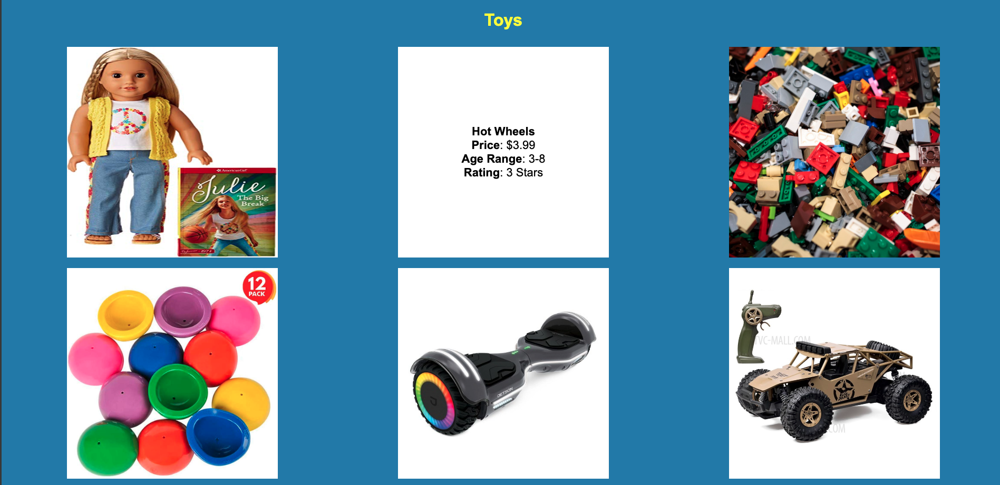

Ladd Jackson
CSCE 240 - Client-Server Computing
Assignments
Assignment 1 - Basic HTML

This assignment utilizes basic HTML formatting to create a simple website
Assignment 2 - Basic CSS

This assignment is designed as an introduction into the fundementals of Cascading Style Sheets.
Assignment 3 - Page Layout

This assignment requires that you utilize the CSS Flex property to organize a webpage
Assignment 4 - Javascript
This assignment introduces Javascript by requiring the creation of a simple price calculator
Assignment 5 - Javascript Conditionals

This assignment requires us to implement Javascript Conditionals in order to create an age comparing program and a responsive "donation" thermometer
Assignment 6 - CSS Recreation
This assignment requies us to succesfully recreate This website.
Assignment 7 - Javascript Variables
This assignment required us to utilize Javascript variables to make slight adjustments to elements on the webpage
Assignment 8 - Javascript Loops
This assignment requies us to implement HTML changes using the setTimeout method in Javascript
Assignment 9 - Javascript Classes
This assignment requies us to create "toy" classes, and have them display their information in a visually appealing webpage